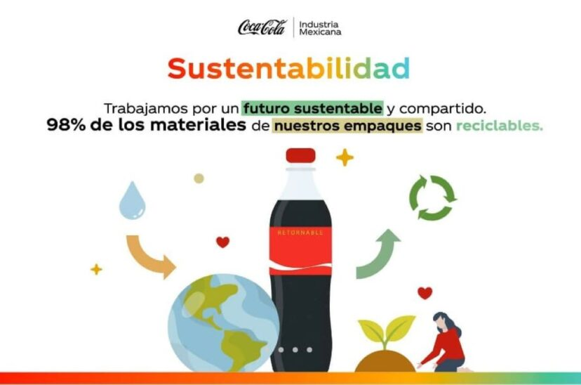

Noticias
Nueva campaña global de Coca-Cola
Coca-Cola lanza su nueva campaña “Siente el sabor” en más de 50 países, celebrando la alegría de compartir.
Coca-Cola ha presentado su campaña global “Siente el sabor”, que busca conectar a las personas a través de experiencias únicas y momentos de felicidad. La campaña incluye anuncios televisivos, eventos en vivo y una fuerte presencia en redes sociales. “Queremos que cada sorbo de Coca-Cola sea un recordatorio de los pequeños placeres de la vida”, afirmó el director de marketing.
Coca-Cola refuerza su compromiso con la sostenibilidad
La compañía anuncia nuevas iniciativas para reducir el uso de plástico y aumentar el reciclaje en sus operaciones.

Como parte de su estrategia “Un Mundo sin Residuos”, Coca-Cola implementará envases 100% reciclables y promoverá campañas de recolección en comunidades locales. Además, la empresa invertirá en tecnologías limpias para reducir su huella ambiental y fomentar la economía circular.
Evento especial: Coca-Cola Music Experience
El festival musical patrocinado por Coca-Cola regresa con artistas internacionales y experiencias interactivas para los fans.
El Coca-Cola Music Experience 2024 reunirá a miles de jóvenes en un evento lleno de música, tecnología y diversión. Los asistentes podrán disfrutar de conciertos, zonas de gaming y actividades exclusivas, reafirmando el compromiso de la marca con la cultura juvenil.